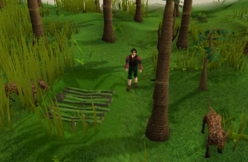
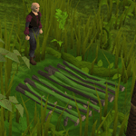
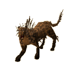
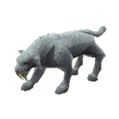
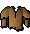
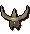
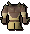
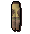
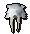
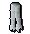

Hunter - Pitfall Trapping (Level 31+)
Pitfall Traps

Pitfall traps use the pits in the ground that dot the landscape around pitfall targets. These dips can be changed into spiked pits with the simple use of logs from a tree. Left-click on these pits with a knife and logs in your inventory to set the trap, ready to be sprung by a big animal.
Next, the difficult bit. With the aid of a teasing stick, bought from any Hunter store, a particularly brave hunter can prod a creature and cause it to run after him or her. If that brave hunter happens to be you, make sure you lead it toward your pitfall and then jump over. With any luck (and a high Hunter skill) the beast should fall into your spike trap, leaving it ready to have its hide gleaned.

The higher the Hunter skill, the more chance that the animal will be tricked by you.
These hides can be made into animal-skin clothing for aiding you with Hunter, more specifically in those areas where the animal-skin was gleaned. A sabretooth kyatt, trapped in polar regions, will increase your chance of Hunter success when made into animal-skin clothing, but only in polar regions. A full-set of kyatt-skin clothing will increase that chance even further! (See the Hunter - Equipment page for more information on making these.)
Pitfall Trap Locations
For maps and detailed locations of the tracking creatures for Hunter, visit the Hunter - Locations page.
Pitfall creatures can be found at the following Hunter areas around RuneScape: sabretooth kyatts at the Rellekka and Trollweiss Hunter area, north of Rellekka; and the spined larupia in the Feldip Jungle, just south of the Feldip Hills and Gu'Tanoth.
The horned graahk dwells to the north of Cairn Isle, on the west coast of Karamja.
Pitfall Trap Creatures
Creature |
Levels Required |
Experience Gained |
Hunter reward |
Notes |
Location |
|  Spined larupia |
31 |
180 | Big bones, spined fur | Fur can be made into spined larupia-skin clothing. | Feldip Hunter area |
![[image]](../../img/main/kbase/skills/hunter/npcs/horned_graahk.gif) Horned graahk |
41 |
240 | Big bones, horned graahk fur | Fur can be made into graahk-skin clothing. | Karamja (near Cairn Isle) |
|  Sabretooth kyatt |
55 |
300 | Big bones, sabretooth fur | Fur can be made into sabretooth kyatt-skin clothing. | Trollweiss Hunter area |
Pitfall Trap Rewards
The fur gleaned from pitfall creatures can come in one of two forms: tatty or perfect. Both can be made into trousers and tops at the fancy-dress store in Varrock for a price, but perfect fur can additionally be made into headdresses. The tatty and perfect fur can also be sold to the fur traders of Rellekka and Ardougne, although the tatty fur will get a lower price (see Hunter - Extra Features).
Once made, these clothes will increase your chances of catching creatures using Hunter in their respective areas: larupia gear for the jungle and woodland, horned graahk gear for the desert, and sabretooth kyatt gear for the polar areas. A full set will increase your chances even further!
| Item | Levels Required |
||||||||||||||||||
| Attack Bonuses | Defence Bonuses | Other | |||||||||||||||||
![[Image: Stab]](../../img/main/kbase/table_text/stab1.gif "Stab") |
![[Image: Slash]](../../img/main/kbase/table_text/slash1.gif "Slash") |
![[Image: Crush]](../../img/main/kbase/table_text/crush1.gif "Crush") |
![[Image: Magic]](../../img/main/kbase/table_text/magic1.gif "Magic") |
![[Image: Range]](../../img/main/kbase/table_text/range1.gif "Range") |
|
|
|
|
|
![[Image: Summoning]](../../img/main/kbase/table_text/summoning1.gif "Summoning") |
![[Image: Strength]](../../img/main/kbase/table_text/strength1.gif "strength") |
![[Image: Prayer]](../../img/main/kbase/table_text/prayer1.gif "Prayer") |
|||||||
![[image]](../../img/main/kbase/skills/hunter/items/jaguarhat.gif) Spined larupia hat |
28 |
+ 0 | + 0 | + 0 | + 0 | - 1 | + 4 | + 5 | + 3 | + 0 | + 4 | + 5 | + 0 | + 0 | |||||
|  Spined larupia top |
28 |
+ 0 | + 0 | + 0 | + 0 | + 0 | + 10 | + 15 | + 19 | + 0 | + 12 | + 10 | + 0 | + 0 | |||||
![[image]](../../img/main/kbase/skills/hunter/items/spikeridelegs.gif) Spined larupia legs |
28 |
+ 0 | + 0 | + 0 | + 0 | - 7 | + 11 | + 10 | + 10 | + 0 | + 10 | + 5 | + 0 | + 0 | |||||
|  Horned graahk headdress |
38 |
+ 0 | + 0 | + 0 | + 0 | - 1 | + 4 | + 5 | + 3 | + 0 | + 4 | + 3 | + 0 | + 0 | |||||
|  Horned graahk top |
38 |
+ 0 | + 0 | + 0 | + 0 | + 0 | + 10 | + 15 | + 19 | + 0 | + 12 | + 15 | + 0 | + 0 | |||||
|  Horned graahk legs |
38 |
+ 0 | + 0 | + 0 | + 0 | - 7 | + 11 | + 10 | + 10 | + 0 | + 10 | + 10 | + 0 | + 0 | |||||
|  Sabretooth kyatt hat |
52 |
+ 0 | + 0 | + 0 | + 0 | - 1 | + 4 | + 5 | + 3 | + 0 | + 4 | + 3 | + 0 | + 0 | |||||
![[image]](../../img/main/kbase/skills/hunter/items/sabretoothtop.gif) Sabretooth kyatt top |
52 |
+ 0 | + 0 | + 0 | + 0 | + 0 | + 10 | + 15 | + 19 | + 0 | + 12 | + 20 | + 0 | + 0 | |||||
|  Sabretooth kyatt legs |
52 |
+ 0 | + 0 | + 0 | + 0 | - 7 | + 11 | + 10 | + 10 | + 0 | + 10 | + 10 | + 0 | + 0 | |||||

More articles in
Hunter
|
|